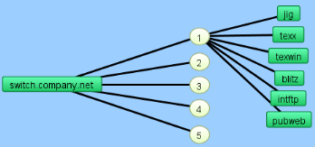
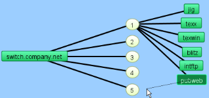
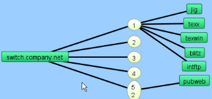

Here are some tips for handling switches in your map.
Auto-discovered switches will have all their ports shown in a map. This can add a great deal of clutter, and make it difficult to see the real structure of the map. In addition, an inactive (i.e., unused) switch port will cause the switch itself to be placed in alarm.
Note: You can also convert your map to Layer 2. Using Layer 2 information, your map is automatically updated to match the topology represented by the switch's Layer 2 information. For more information, see Mapping with Layer 2{}.
Use the Interfaces window to select and remove these switch ports.
To hide switch ports:
InterMapper does not connect devices to the proper port of a switch. Instead, it connects all the devices of a subnet to the first switch port it discovers (usually the port with ifIndex=1).
You can manually move a device's link to the proper port by dragging the link from the central oval (labeled "192.168.1.0/24" in the figures below) to the proper port, as shown below:
| 1. The map before making changes. The switch's ports are shown by the numbered ovals. (Make sure the map is in Edit mode.) |  |
| 2. Click a link and drag it. A line appears, and follows the cursor. Note: You can drag links only from a network. |
 |
|
3. Drag the link to the desired port. The link disconnects from the original network oval and remains connected to the new. Note that the port's oval now contains two port numbers: that of the switch (7) and the port number of the device (2). Tip: When moving links to the proper ports on a switch, it's sometimes easier to change the port labels to display the port's number. |
 |